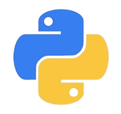
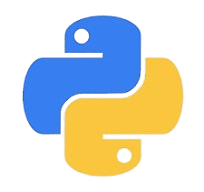
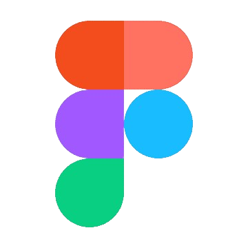
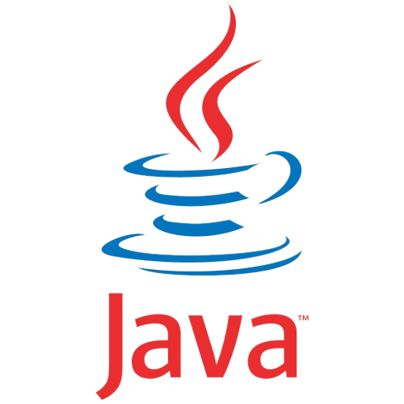
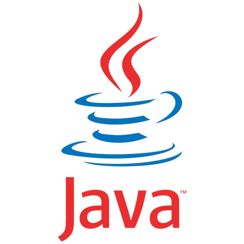

Integrantes da equipe

Henrique Alcântara
Interesses
Minha área de interesse é cibersegurança. Tenho uma grande paixão por entender como proteger sistemas, redes e dados contra ameaças cibernéticas. Estou em busca de aprender sobre as últimas técnicas e ferramentas utilizadas para prevenir ataques, bem como desenvolver soluções eficazes para garantir a segurança digital. Acredito que, em um mundo cada vez mais conectado, a proteção das informações e a integridade dos sistemas é essencial para a confiança e o funcionamento das empresas e usuários.
Habilidades


 

Thiago Felipe
Interesses
SQL, Banco de Dados e Desenvolvimento Back-End
Estou muito interessado em aprender sobre SQL e bancos de dados, pois eles são essenciais para armazenar e gerenciar informações. Acredito que entender como os dados funcionam é fundamental para qualquer desenvolvedor. Além disso, estou animado com o desenvolvimento back-end, que é a parte das aplicações que lida com o que acontece "por trás das cenas". Quero aprender a criar sistemas que conectem o front-end ao banco de dados de forma eficiente. Estou empolgado para explorar mais essa área e desenvolver minhas habilidades!
Habilidades


Rodrigo Vieira
Interesses
Desenvolver interfaces visuais e criar a parte visual de grandes projetos. Meu foco é projetar experiências intuitivas e atraentes para os usuários, garantindo um design funcional e impactante. Quero aprimorar minhas habilidades em criação de layouts e interfaces interativas que proporcionem uma navegação fluida e envolvente.
Habilidades


Enrico Bertolucci
Interesses
SQL, Banco de Dados e Machine learning
Me interesso por Machine learning pois acho fascinante a área de IA e vejo que ela está cada vez mais presente no dia a dia e em rápida evolução. Outra área que me interesso é SQL e Banco de Dados pois comecei a entender a importância dessa área e como ela é fundamental para todos os negócios de grande escala nos dias de hoje.
Habilidades


Luiz Henrique
Interesses
Eu tenho interesse em back-end na área de engenharia de software, pois gosto de entender e construir a estrutura que sustenta as aplicações. Meu foco está em aprender sobre lógica de programação, bancos de dados e a comunicação entre diferentes sistemas. Para isso, vou começar a estudar Java e SQL, aprofundando meus conhecimentos e desenvolvendo minhas habilidades para atuar de forma mais eficiente no desenvolvimento de software.
Habilidades

Lucas Dourado
Interesses
Eu gosto muito de UI/UX DESIGN , mas estou focando em banco de dados que foi uma área que me despertou bastante interesse por poder lidar com todas as informações das empresas e poder ajudar na tomada de decisões importantes de cada setor
Habilidades

Leonardo
Interesses
Desenvolvimento Back-End, estudando Java para criar softwares eficientes e escaláveis. No futuro, quero me tornar full-stack e aprofundar meus conhecimentos em arquitetura de software.
Habilidades
 

Ricardo Zan
Interesses
Eu gosto de back-end porque é onde a mágica dos sistemas realmente acontece. Trabalhar com back-end me permite criar a base que faz as aplicações funcionarem de maneira eficiente e segura. Eu gosto de resolver problemas complexos, otimizar bancos de dados, projetar APIs e garantir que tudo no invisível esteja perfeitamente alinhado para oferecer uma experiência impecável ao usuário final.